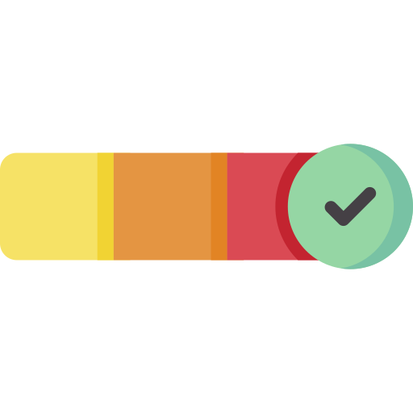

Bonjour üëã je suis
Mamadou Ba
Etudiant
Développeur
Bonjour üëã je suis
"Mon aspiration est de parfaire ma formation actuelle et d'intégrer une école d'ingénieur. Mon objectif ultime est de devenir un développeur web ou logiciel. Fasciné par la fusion de la créativité et de la rigueur technique, je souhaite contribuer activement à l'évolution du monde numérique en concevant des solutions innovantes et en offrant des expériences utilisateur exceptionnelles. Mon engagement est total, prêt à relever les défis et à faire de ces aspirations une réalité concrète."


Réalisation d'un jeu de territoire avec des boules de couleur en python à l'aide d'une bibilothèque locale
En savoir plusJ'ai réalisé un jeu de territoire en Python qui se joue à deux joueurs avec une bibilothèque locale "Upemtk" qui est inspirée de de "Tkinter"
Description du jeu :
-Les zones intérieures de deux balles de couleurs différentes ne peuvent pas se chevaucher. Si un joueur tente d'ajouter une balle qui chevauche l'intérieur d'une balle de couleur opposée, rien ne se passe et c'est le tour du joueur suivant.
-Si un joueur clique à l'intérieur de la zone d'une balle appartenant à l'adversaire, il la divise en deux balles de couleur identique mais plus petites. Une des nouvelles balles a son centre à l'endroit où le joueur a cliqué et est tangente à la balle d'origine, tandis que l'autre est tangente à la balle d'origine et à la nouvelle balle créée.
-A la fin du jeu, le joueur qui a le plus de couleur sur l'air de jeu remporte la partie.
-Différents modes ont été implémenté tels qu'une intelligence artificielle simple ou une aire de jeu avec obstacle etc...

Réalisation d'un jeu en Java en utilisant une bibliothèque graphique locale
En savoir plusEn binôme, nous avons réalisé le projet de développement du jeu "BackPack Hero" en utilisant la bibliothèque graphique locale Zen5 et en structurant le code selon le modèle Modèle-Vue-Contrôleur (MVC).
Description du jeu :
"BackPack Hero" est une version simplifiée du jeu éponyme. Il s'agit d'un jeu solo où le joueur incarne un héros chargé d'explorer un donjon rempli de monstres et de trésors. Pour avancer dans l'aventure, le héros doit se fier uniquement au matériel qu'il transporte dans son sac à dos. Ce jeu appartient au genre "rogue-like", où l'exploration et la gestion des ressources sont au cœur de l'expérience. L'un des aspects majeurs du gameplay réside dans le placement stratégique des tuiles, qui interagissent de manière dynamique avec le joueur et l'environnement du jeu.
Réalisation d'une interface web et application mobile contenant un jeu
En savoir plusCe projet a été réalisé en équipe en partant d'un cahier des charges. Il consiste à créer une application conviviale et responsive permettant de jouer à un jeu impliquant des chaînes de mot et leur similarité sémantique et orthographique, un peu comme le jeu Cémantix sur internet.
Langages utilisés :
-HTML : pour la structure et le contenu de l'interface web.
-CSS : pour le style et la présentation de l'interface, assurant une esthétique agréable et une expérience utilisateur optimisée.
-PHP : pour la logique côté serveur, la gestion des sessions, et l'interaction avec la base de données, si nécessaire.
-JavaScript : pour la programmation côté client, l'interactivité de l'interface utilisateur, les fonctionnalités dynamiques.
-Java : pour le développement de l'application mobile Android, en utilisant Android Studio comme environnement de développement intégré (IDE). ainsi que le développement du jeu principal.
-C : pour le développement du jeu, en s'appuyant sur les fonctionnalités de base du langage C et en exploitant les bibliothèques appropriées pour la conception de jeux.
Bilan :
J'ai acquis une solide expérience dans la réalisation d'applications et d'outils informatiques, en passant par toutes les étapes du processus de développement. Ma capacité à concrétiser des idées abstraites en produits fonctionnels s'est renforcée au fil des projets. Je suis à l'aise dans la collaboration en équipe et je reste ouvert aux opportunités d'apprentissage pour continuer à progresser dans ce domaine.

Réalisation d'un labyrinthe généré aléatoirement et de sa résolution, en utilisant l'algorithme le plus optimisé en langage C
En savoir plusCe projet a été réalisé en binôme. Pour créer des labyrinthes, nous nous sommes inspirés de l'algorithme de fusion aléatoire des chemins. Cet algorithme génère des labyrinthes parfaits en attribuant une valeur unique à chaque cellule et en partant d'un labyrinthe où tous les murs sont fermés. À chaque étape, nous sélectionnons un mur aléatoirement à ouvrir. Lorsqu'un mur est ouvert entre deux cellules voisines, ces cellules sont reliées entre elles pour former un chemin. Nous vérifions à chaque fois que les deux cellules sélectionnées ont des valeurs différentes ; si elles sont identiques, cela signifie qu'elles sont déjà reliées et appartiennent au même chemin. Si les valeurs sont différentes, nous ouvrons le mur et attribuons la valeur de la première cellule à toutes les cellules du deuxième chemin. Nous répétons ces étapes un grand nombre de fois jusqu'à ce qu'il ne reste qu'une seule valeur.
Langage utilisé : C
Bilan :
Mon expérience m'a permis d'explorer différents langages de programmation et d'approfondir ma compréhension des algorithmes. Cette expertise m'a été précieuse pour perfectionner mes codes et améliorer les performances de mes applications. Je reste engagé à continuer d'explorer de nouvelles techniques d'optimisation pour affiner davantage mes compétences.
Bilan :
Mon parcours m'a offert l'opportunité d'apprendre les fondamentaux du fonctionnement et du déploiement d'un réseau, bien que ce ne soit pas mon point fort initial. J'ai acquis une compréhension de base solide qui m'a permis de déployer des services essentiels dans un environnement réseau. Je suis conscient de mes limites actuelles dans ce domaine, mais je reste ouvert à l'apprentissage continu pour renforcer mes compétences en administration réseau.

Réalisation et gestion d'une base de donnée d'un hôpital ralliée à un site web en HTML / CSS / PHP
En savoir plusCaractéristiques du projet réalisé en binôme:
-Conception de la Base de Données :
Création d'une base de données relationnelle pour stocker les informations essentielles relatives aux patients, aux médecins, au personnel médical, aux rendez-vous, aux traitements, etc. Structuration des tables de la base de données de manière à garantir une organisation efficace et cohérente des données, tout en assurant leur intégrité et leur sécurité.
-Développement de l'Interface Web :
Utilisation de HTML pour définir la structure et le contenu des pages web, en veillant à une présentation claire et intuitive des informations.
Utilisation de CSS pour styliser et mettre en forme les éléments de l'interface, en assurant une expérience utilisateur agréable et professionnelle.
Utilisation de PHP pour la programmation côté serveur, permettant de gérer les requêtes des utilisateurs, d'interagir avec la base de données et de générer des pages web dynamiques en fonction des données récupérées.
-Gestion des Profils :
Mise en place de différents profils d'utilisateur, tels que les patients, les médecins, le personnel administratif, etc.
Création de fonctionnalités spécifiques à chaque profil, permettant aux utilisateurs d'accéder aux informations pertinentes et d'effectuer les actions nécessaires en fonction de leurs responsabilités et autorisations.
-Sécurité des Données :
Implémentation de mesures de sécurité robustes pour protéger les données sensibles des patients et du personnel médical.
Utilisation de techniques de cryptage pour sécuriser les mots de passe des utilisateurs et prévenir les accès non autorisés.
Mise en place de contrôles d'accès et de permissions pour limiter l'accès aux données en fonction du profil de l'utilisateur et de ses privilèges.
Bilan :
Ma compétence en gestion m'a permis de mettre en œuvre des bases de données optimisées. J'ai appris à analyser les besoins, à interagir avec les applications et à garantir la sécurité des données. Je suis déterminé à continuer à améliorer mes compétences dans ce domaine pour répondre aux exigences croissantes du secteur informatique.
Bilan :
Mon expérience m'a permis d'apprendre différentes méthodes de conduite de projet en équipe, ce qui s'avère précieux en milieu professionnel. J'ai développé la capacité à organiser et piloter des projets, en adaptant mes méthodes aux besoins spécifiques de chaque situation. Je reste ouvert à explorer de nouvelles approches pour continuer à progresser dans ce domaine clé de la gestion de projet.
Réalisation d'une interface de paiement d'une banque fictive en équipe en utilsant la méthode agile
En savoir plusCaractéristiques du projet réalisé en équipe de 4:
-Conception et Planification :
L'équipe se réunit initialement pour définir les objectifs du projet, établir les spécifications de l'interface de paiement, et identifier les exigences fonctionnelles et non fonctionnelles. Une session de planification est organisée pour diviser le projet en tâches plus petites et définir les itérations ou "sprints" à suivre dans le cadre de la méthode agile.
-Méthode Agile :
L'équipe utilise une approche agile pour gérer le projet de manière itérative et incrémentale.
Des réunions régulières sont organisées, comme les réunions de sprint, pour suivre les progrès, résoudre les problèmes rencontrés et ajuster les priorités si nécessaire.
Les tâches sont attribuées à chaque membre de l'équipe en fonction de leurs compétences et de leurs domaines d'expertise, favorisant ainsi une répartition équilibrée du travail.
-Développement de l'Interface :
Le développement de l'interface de paiement est réalisé en utilisant les langages HTML, CSS et PHP pour créer une expérience utilisateur intuitive et conviviale.
L'interface sera conçue pour permettre aux utilisateurs d'accéder facilement à leurs comptes, d'effectuer des transactions, de consulter l'historique des paiements, etc.
-Gestion de la Base de Données :
Une base de données SQL est mise en place pour stocker les informations des clients, des comptes bancaires, des transactions, etc.
L'équipe utilise des bonnes pratiques de conception de base de données pour assurer la normalisation et l'intégrité des données, ainsi que pour optimiser les performances.
-Tests et Déploiement :
Des tests unitaires et des tests d'intégration sont effectués tout au long du processus de développement pour garantir la qualité du code et la fiabilité de l'interface.
Bilan :
Mon parcours m'a permis d'apprendre efficacement à répartir les tâches au sein d'une équipe de projet. J'ai développé une capacité à organiser les ressources et à coordonner les efforts de manière à maximiser la productivité collective. Cette compétence en collaboration est essentielle pour le succès des projets et je reste engagé à l'améliorer continuellement.
Adresse:
IUT de Marne-la-Vallée - Université Gustave Eiffel
Email:
mamadou0877@gmail.com
Téléphone:
0782848080
LinkedIn:
linkedin.com/in/mamadou-ba-4b2031267